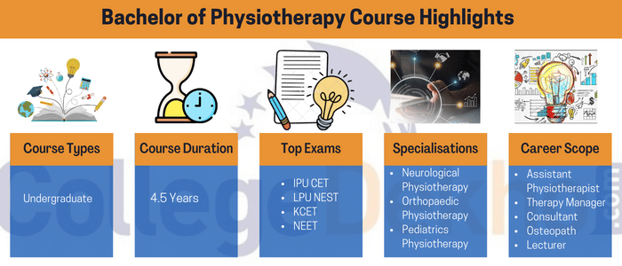
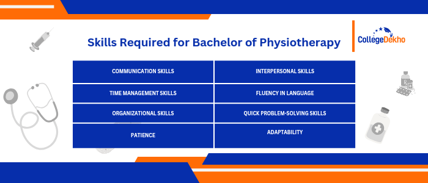
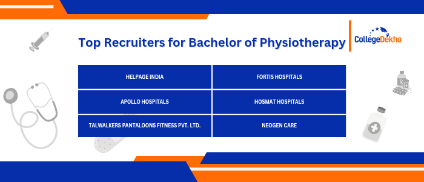

- We’re on your favourite socials!


BPT Course - Bachelor of Physiotherapy
 Save
Save Request a callback
Request a callback Ask us
Ask us
BPT or Bachelor of Physiotherapy is a 4-year UG course degree which trains students to treat muscle spasms and injuries of movement in Patients. The BOT course features a mandatory 6 months internship for all students to complete as a part of the course curriculum. The average BPT course fee for admission may range upto INR 80,000 to INR 5 LPA, depending upon the type of institution, location of the institute, faculty, infrastructure and other facilities available. Admissions to BPT courses are conducted through entrance exams.
What is BPT Course?
Bachelor of Physiotherapy is also known as BPT course. BPT Course duration is 4 years, with a mandatory 6-month internship period to train students into the practical aspects of Physiotherapy. BPT is an undergraduate degree designed to professionally train students to skillfully treat muscle spasms and injuries of movement in Patients. BPT admission is granted to those who have qualified their 10+2 with at least 50% marks in aggregate, in the Science stream. Moreover, various entrance examinations are conducted for BPT Course admission, such as IPU CET, CUET, KCET, LPU NEST, etc. For a better understanding of the course structure, candidates may glance through the BPT Course Syllabus, defining the core subjects like Human Anatomy, Biochemistry, Pathology, Biomechanics, and Sociology.
The average BPT course fee usually varies depending on the type of institute, location and the degree. However, the standard BPT course fee ranges from INR 80,000 to INR 5 LPA on an average. Some of the most popular institutions offering BPT course admissions are Jamia Hamdard University, Kasturba Medical College, Parul University, etc. Common BPT Job Profiles include positions such as Therapy Manager, Osteopath, Physiotherapist, Customer Care Assistant, Researcher, Assistant Physiotherapist, Research Assistant, Sports Physiotherapist, etc. The average BPT Salary usually ranges between INR 2 LPA to INR 8 LPA, depending on several factors such as the type of employment, the location, the kind of organization, level of expertise, etc. Physiotherapists, in today's world, are in constant demand due to the changing lifestyles and modernization of human well-being.
Table of Contents
- What is BPT Course?
- BPT Course Details: Highlights
- Why Choose BPT Course?
- Difference Between BPT and BSc in Physiology Course
- Difference Between BPT and BDS Course
- BPT Specialisations
- BPT Eligibility Criteria
- BPT Entrance Exam
- BPT Degree Admission Process: How to Apply for BPT?
- BPT Subjects & Syllabus
- Top BPT Colleges in India
- BPT Course Top Colleges: State-wise & City-wise Breakdown
- What after BPT Course?
- Career Options after BPT Course
- BPT Scope in India
- Study Abroad BPT Course for Indian Students
- Top Colleges for BPT Abroad
- FAQs about BPT
BPT Course Details: Highlights

The Bachelor of Physiotherapy course is an undergraduate program that lasts for 4 years and a six-month internship period. It is mandatory to do an internship for six months with a recognized hospital for successful completion of the BPT course. Check the Bachelor of Physiotherapy (BPT) course highlights tabulated below.
| Course Name | Bachelor of Physiotherapy |
|---|---|
| Short Form | BPT |
| Course Level | Undergraduate |
| Course Type | Degree Course |
| Course Duration | 4.5 Years |
| Eligibility Criteria | 10+2 |
| Course Fee | INR 80,000 to INR 5 LPA |
| Admission Through | Merit-Based or Entrance Exam |
| Internship | Mandatory 6 months internship with a recognized hospital |
| Employment Areas | Health Institutions, Defence Medical Establishments, Fitness Centre, Educational Institutions, Hospitals, Physiotherapy Equipment Manufacturers, Orthopedic Departments |
| Job Profiles | Therapy Manager, Customer Care Assistant, Osteopath, Physiotherapist, Researcher, Assistant Physiotherapist, Research Assistant, Sports Physio Rehabilitator, Self Employed Private Physiotherapist, Sports Physiotherapist |
| Salary | INR 2 LPA to INR 8 LPA |
Why Choose BPT Course?
BPT is still a new career opportunity, and is catching up with the mainstream courses in the recent past. Due to the change in daily lifestyles all over the world has led to a huge number of people ailing from various forms of pain and motion restricting illnesses. Physiotherapists are not only needed to aid people suffering from chronic pain, but they also help in various other cases to revive locomotion. Listed below are some of the reasons to choose a BPT Course.
- Comprehensive Healthcare Industry: BPT course is primarily focused on improving the physical well-being of individuals and their quality of living. Therefore, there is no doubt that Physiotherapists play a vital role in the rehabilitation and treatment of individuals with various medical conditions, injuries, and disabilities.
- In-Demand Career Opportunities: With the growing demand for qualified physiotherapists in the healthcare sector, it is evident that the need for physiotherapists are always on the rise due to an aging population, increased awareness of the importance of physical health, and the need for rehabilitation services. Therefore, BPT Course has seen an increase in demand among medical students.
- Diverse Specializations: BPT course often offers the chance to specialize in areas such as orthopaedics, sports, neurology, paediatrics, cardiopulmonary care, and more. Thus, pursuing a BPT course can open up a lot of opportunities after completing the degree program.
- Hands-On Training: BPT course typically includes practical clinical training, providing students with real-world experience working with patients under the guidance of experienced professionals. This hands-on training enhances one's clinical skills and prepares them for the challenges in the professional field. This is another reason why students opt for a BPT Course degree.
In India, there is a high demand for physiotherapists, and various types of patients require theses services, especially those recovering from surgery and accidents as well as those suffering from chronic conditions such as arthritis. Students who graduate with a BPT Degree can work as sports physiotherapists, physiotherapists, osteopaths, or consultants, and earn an average of INR 5 LPA.
Difference Between BPT and BSc in Physiology Course
There are certain differences between BPT and BSc in Physiology degrees. Knowing these minute differences can help in making a sound decision about the appropriate course to pursue between the two. Often mistaken to be similar or the same, find the difference between BPT and BSc in Physiology degrees tabulated below for reference.
| Difference between BPT and BSc in Physiology | ||
|---|---|---|
| Parameters | Bachelor of Physiotherapy | Bachelor of Science in Physiology |
| Level | Undergraduate | Undergraduate |
| Name of the course | Bachelor of Physiotherapy | Bachelor of Science in Physiology |
| Short Name | BPT | BSc in Physiology |
| Duration | 4.5 Years | 3 Years |
| Mode | Regular | Regular |
| Exam Type | Semester | Semester |
| Internship | Mandatory 6 months with a recognised hospital. | - |
| Minimum Qualification |
|
|
| Selection Process | Merit-Based/ Through Entrance Exam | Merit-Based/ Through Entrance Exam |
| Fee Structure | INR 1 Lakh to INR 5 Lakhs | INR 15,000 to INR 4 LPA |
| Average Salary | INR 15,000 per month to INR 8 LPA | INR 3.5 LPA to INR 6 LPA |
| Employment Sectors |
|
|
| Job Profiles |
|
|
Difference Between BPT and BDS Course
While BPT Course is categorized as a medical degree, BDS falls under the dental science stream. BPT focuses on the science of physiotherapy in medical facilities and institutions. BDS, on the other hand, depends on the knowledge and expertise of an individual to perform dental surgical procedures, consultations, and all issues related to oral health and dental procedures. A detailed comparison between BPT and BDS courses have been mentioned below for reference:
| Parameters | BPT Course | BDS Course |
|---|---|---|
| Course Title | Bachelor of Physiotherapy | Bachelor of Dental Surgery |
| Also Known As | BPT | BDS |
| Course Duration | 4 Years | 5 Years |
| Course Level | Undergraduate | Undergraduate |
| Eligibility | 10+2 with Science Stream | 10+2 with Science Stream |
| Admission Process | Entrance Exam | Entrance Exam |
| Mandatory Internship | 6 Months | 1 Year |
| Course Fee | INR 2-3 LPA | INR 3-5 LPA |
| Job Profiles | Physiotherapists, osteopaths, Researchers, etc. | Private Practitioner, Dental Lab Technician, Dental Surgeon, Professor, Oral Pathologist, Public Health Specialist, etc. |
| Average Salary | INR 3-8 LPA | INR 3-6 LPA |
BPT Specialisations
Candidates wishing to pursue a BPT course can opt for a specialization in the field of Physiotherapy from the list of options mentioned below. The specialization courses aim at equipping the candidates for specialized care in different fields or dedicated parts of the body. Moreover, a specialization adds extra value to the course of study, enhancing the value of the degree and henceforth, the salary prospects.
Some of the specializations available post completion of BPT are Cardiovascular & Pulmonary Clinical Specialist (CCS), Geriatric Clinical Specialist (GCS), Orthopedic Clinical Specialist (OCS), Neurology Clinical Specialist (NCS), Pediatric Clinical Specialist (PCS), to name a few.
| BPT Course Specialisation | BPT Specialisation Details |
|---|---|
| Neurological Physiotherapy | This specialization predominantly deals with the treatment of motion difficulty related to the body's neurological system. Any damage caused to the central nervous system, including the brain and spine, leads to restricted movement and smooth body functions. Spinal cord injury, brain injury, stroke, and problems in balancing are a few of the ailments that require Neurological Physiotherapy. |
| Geriatrics Physiotherapy | Disorders such as osteoporosis and arthritis in the elderly are treated by a physiotherapist who has specialised in the field of Geriatrics Physiotherapy. The field predominantly works with the elderly. |
| Pediatrics Physiotherapy | This specialisation deals with the development of movement in babies. Paediatricians work towards improving the quality of life of children with neuromuscular disorders such as cerebral palsy and autism. |
| Orthopaedic Physiotherapy | A combined knowledge of the anatomy, physiology and pathology of the skeleton and soft tissues covers the field of expertise of orthopaedic physiotherapy. Orthopaedics are predominantly concerned with the management of the disorders related to the musculoskeletal system. Some of the common problems that are treated by Orthopaedics include back and neck pain, hip fracture, osteoporosis, arthritis, and bursitis. |
BPT Eligibility Criteria
Bachelor of Physiotherapy is an undergraduate degree course one can opt for after completing their 10+2 board examination. Check the eligibility criteria for the course as tabulated below.
| BPT Eligibility Criteria | |
|---|---|
| Minimum Qualification Required | 10+2 |
| Subject Combination | Physics, Chemistry and Biology as compulsory subjects (sometimes English too) |
| Minimum Marks Required | 50% (relaxation is given to the reserved category students) |
| Minimum Age Required | 17 Years |
| Note | Candidates are required to get their marks verified during the time of admission through the original copies of their documents and mark sheet |
BPT Cut-Off
BPT cutoff determines the required percentage of marks of a student in order to be eligible for admission to BPT Course. BPT Course cutoff is the merit score for the BPT admission process, based on which students are granted admission across various medical colleges in India. Moreover, it is the primary criteria for students’ admission into BPT course in India. BPT cutoff is based on the number of students appearing for the entrance examination, the previous year’s cutoff, and question paper. BPT Course graduates may opt for further studies after graduation.
Required Skills for BPT Course
Bachelor of Physiotherapy (BPT) course demands its aspirants to have sound clinical knowledge and the scientific rationale behind all the clinical modalities performed for the clients. Candidates pursuing BPT are expected to be highly patient with their clients, possessing great levels of empathy towards their ailment and sufferings. Some of the requires skills for BPT Course are mentioned below:

BPT Entrance Exam
To begin with, there are no common entrance exams when it comes to BPT course admissions. However, there are plenty of Institutions that offer BPT admission based on the college-specific entrance exams conducted for BPT Course admission. Thus, it is crucial for candidates to keep in mind that they need to secure the minimum qualifying score in the BPT Entrance Exams for the admission process. Apart from this, candidates may also be granted admission to the BPT Course through a merit-based selection process. With these, a candidate can enroll themselves into their desired BPT college.
For admission to the BPT course, interested candidates must have completed their 10+2 or its equivalent with a minimum of 50% aggregate marks (45% for SC/ ST), in the Science stream. Interestingly, the qualifying percentage of marks for BPT course varies according to the candidate’s category. The most common BPT entrance exams for BPT admission in India are mentioned below for reference:
| EntranceExam | ExamDate | Details |
|---|---|---|
| CUET Exam | May 15-31, 2024 |
|
| IPU CET Exam | May 2024 |
|
| LPUNEST Exam | February 15-29, 2024 |
|
| KCET Exam | April 18-20, 2024 |
|
| NEET Exam | May 5, 2024 |
|
BPT Degree Admission Process: How to Apply for BPT?

Admission to BPT is done through BPT application process conducted by different individual colleges. There are no common entrance tests for admission into BPT. The admission process is done on the basis of merit, i.e. on the scores obtained by the candidate in the 10+2 board examinations. Some BPT colleges provide admission on the basis of college-specific entrance examinations. For a detailed insight, candidates may go throughBPT Admissions in India 2024.
| (BPT) Admission Process | |
|---|---|
| Minimum Qualification | 10+2 Examination |
| Minimum Aggregate Score | 50% aggregate marks in 10+2 board examination |
| Entrance Examination |
|
| Documents Required |
|
| Registration Fee | Varies for different BPT colleges |
BPT Scholarships
BPT Courses across some institutes also offer various BPT scholarship programs from both government and private aided organizations. Mentioned below is a list of all such BPT scholarship programs for students to take a glance at:
- Post Matric Scholarship for SC/ST/OBC Students
- Dr. Abdul Kalam Scholarship for Medical Students
- AIIMSONIANS Scholarship
- Sri Ramachandra Institute of Higher Education and Research Scholarship
- Central Sector Scheme of National Overseas Scholarship
BPT Subjects & Syllabus
BPT syllabus covers the aspect of human physiology through its biological and chemical composition and helps equip the candidate with ample knowledge about the working of human physiology. They are also taught soft skills that can enable them to connect with the patients and understand them better. Tabulated below is the detailed course structure for all four years.
For Theory Papers:
The semester wise theory syllabus of BPT is listed below:
| Semester I | ||
|---|---|---|
| Human Anatomy-I | Basic Computer Information And Soft Skill | Human Physiology -I |
| Biochemistry | Sociology & Psychology | - |
| Semester II | ||
| Human Anatomy-Ii | Human Physiology -Ii | Basic Principles Of Biomechanics |
| Open Elective | - | - |
| Semester III | ||
| Pathology & Microbiology | Biomechanics & Kinesiology | Foundation Of Exercise Therapy |
| Pharmacology | Soft Tissue Manipulation | - |
| Semester IV | ||
| Medical Physiotherapy Law And Ethics | Exercise Therapy | Open Elective |
| Electrotherapy | - | - |
| Semester V | ||
| General Medicine Including Paediatrics & Psychiatry | Clinical Orthopaedics & Traumatology | Community Medicine |
| Obstetrics And Gynecology | General Surgery Including Burns And Plastic Surgery | Interpretation Of Diagnostic Imaging Technology |
| Semester VI | ||
| Physiotherapy In Orthopedics And Sports | Clinical Neurology And Psychiatry | Physiotherapy In General Medicine |
| Introduction To Recent Trends In Physiotherapy | General Surgery | - |
| Semester VII | ||
| Principles Of Management, Critique Inquiry | Case Presentation And Discussion | Clinical Cardiovascular & Pulmonary |
| Physiotherapy In Neurology & Psychosomatic Disorder | Health Promotion And Fitness | Biostatistics & Research Methodology |
| Semester VIII | ||
| Physiotherapy In Cardiovascular &Pulmonary | Administration And Teaching Skills | Community Physiotherapy |
| Clinical Reasoning | Evidence Based Physiotherapy | - |
For Practical:
The BPT Practical syllabus for 8 semesters is mentioned below:
| Semester I | Semester II |
|---|---|
| Human Anatomy - I Lab | Human Anatomy - II Lab |
| Human Physiology - I Lab | Human Physiology – II Lab |
| - | Basic Principles Of Biomechanics Lab |
| Semester III | Semester IV |
| Biomechanics & Kinesiology Lab | Clinical Observation |
| Foundation Of Exercise Therapy & Soft Tissue Manipulation Lab | Electrotherapy |
| Clinical Observation | Exercise Therapy |
| Semester V | Semester VI |
| Clinical Orthopedics & Traumatology | Physiotherapy In Orthopedics And Sports |
| Community Medicine | Physiotherapy In General Medicine And General Surgery |
| Interpretation Of Diagnostic Imaging Technology | Clinical Education |
| Clinical Education | Clinical Neurology And Psychiatry |
| General Medicine Including Paediatrics & Psychiatry | - |
| General Surgery Including Burns And Plastic Surgery & Obstetrics And Gynecology | - |
| Semester VII | Semester VIII |
| Physiotherapy In Neurology & Psychosomatic Disorder | Physiotherapy In Cardiovascular, Pulmonary & Intensive Care |
| Clinical Education | Community Physiotherapy |
| Health Promotion And Fitness | Clinical Reasoning & Evidence Based Physiotherapy |
| Clinical Cardiovascular & Pulmonary | Administration And Teaching Skills |
| - | Research Project |
| - | Clinical Education |
Top BPT Colleges in India
There are many top BPT colleges in India which offer excellent learning experience to interested students. Mentioned below are lists of top government and private BPT Colleges in India for reference.
Top Government BPT Colleges in India
Here is the list of popular government colleges offering BPT degree courses to students:
| College | Average Course Fee |
|---|---|
| Banaras Hindu University | INR 10,000 to INR 17,000 |
| National Institute of Mental Health and Neurosciences | INR 9000 to INR 12,000 |
| All India Institute of Medical Sciences, Delhi | INR 2000 to INR 7,500 |
| Sanjay Gandhi Postgraduate Institute of Medical Sciences | INR 20,000 to INR 50,000 |
| KGMU - King George's Medical University | INR 30,000 to INR 50,000 |
Top Private BPT Colleges in India
Some of the top private BPT colleges in India are listed below:
| Institute Name | Location |
|---|---|
| SRM Institute of Science and Technology | Chennai |
| Dr DY Patil Vidyapeeth | Pune |
| Kasturba Medical College | Mangalore |
| College of Physiotherapy & Allied Health Sciences | Jaipur |
| Sri Ramachandra Institute of Higher Education and Research | Chennai |
| Parul University | Vadodara |
| Christian Medical College | Vellore |
| Amity University | Noida |
BPT Course Top Colleges: State-wise & City-wise Breakdown
Candidates can refer below to find out the topmost colleges that offer BPT course. The institutes are segmented state-wise for aspirants' reference.
BPt Colleges in Delhi NCR
| College Name | Fee Structure |
|---|---|
| Jamia Millia Islamia University-[Jmi], New Delhi | INR 15,000 to INR 20,000 |
| Pt Bhagwat Dayal Sharma Post Graduate Institute Of Medical Sciences - [Pgims], Rohtak | INR 20,000 to INR 40,000 |
| Jamia Hamdard University, New Delhi | INR 3.5 LPA to INR 5 LPA |
| Delhi Pharmaceutical Sciences And Research University - [Dpsru], New Delhi | INR 1.5 LPA to INR 3 LPA |
| Guru Gobind Singh Indraprastha University - [Ggsipu], New Delhi | INR 3 LPA to INR 6.7 LPA |
| Amar Jyoti Rehabilitation And Research Centre, New Delhi | INR 2 LPA to INR 2.5 LPA |
| Amar Jyoti Institute Of Physiotherapy, New Delhi | INR 3.5 LPA to INR 6 LPA |
| Hamdard Institute Of Medical Sciences And Research - [Himsr], New Delhi | INR 5 LPA to INR 7.5 LPA |
| Banarsidas Chandiwala Institute Of Physiotherapy - [Bcip], New Delhi | INR 80,000 to INR 2 LPA |
| Pt. Deendayal Upadhyay Institute For The Physically Handicapped, New Delhi | INR 2 LPA to INR 5.3 LPA |
BPT Colleges in Karnataka
| College Name | Fee Structure |
|---|---|
| Manipal Academy Of Higher Education - [Mahe], Manipal | INR 3.5 LPA to INR 7 LPA |
| Ks Hegde Medical Academy - [Kshema], Mangalore | INR 1.7 LPA to INR 3 LPA |
| KMC, Mangalore | INR 1.5 LPA to INR 2 LPA |
| Dayananda Sagar University - [Dsu], Bangalore | INR 5 LPA to INR 7.5 LPA |
| Kle University, Belgaum | INR 1.2 LPA to INR 2.5 LPA |
| Garden City University - [Gcu], Bangalore | INR 90,000 to INR 2 LPA |
| Hkbk Group Of Institutions, Bangalore | INR 2.5 LPA to INR 4 LPA |
| Nitte University - [Nitte], Mangalore | INR 1.2 LPA to INR 3 LPA |
| Yenepoya University, Mangalore | INR 45,000 to INR 1 LPA |
| Srinivas University, Mangalore | INR 67,000 to INR 1.5 LPA |
| Krupanidhi Group Of Institutions, Bangalore | INR 65,000 to INR 2 LPA |
BPT Colleges in Gujarat
| College Name | Fee Structure |
|---|---|
| P.P. Savani University, Surat | INR 1 LPA to INR 2.5 |
| Sumandeep Vidyapeeth, Vadodara | INR 70,000 to INR 2.2 LPA |
| Parul University, Vadodara | INR 1 LPA to INR 1.4 LPA |
| Rk University - [Rku], Rajkot | INR 75,000 to INR 1.2 LPA |
| Marwadi University - [Mu], Rajkot | INR 90,000 to INR 1.3 LPA |
| Charotar University Of Science And Technology - [Charusat], Anand | INR 1 LPA to INR 2.5 LPA |
| Drs. Kiran And Pallavi Patel Global University, Vadodara | INR 1 LPA to INR 3.5 LPA |
| Uka Tarsadia University, Bardoli | INR 95,000 to INR 2.7 LPA |
| Gokul Global University - [Ggu], Sidhpur | INR 2 LPA to INR 4.5 LPA |
BPT Colleges in Uttar Pradesh
| College Name | Fee Structure |
|---|---|
| Institute Of Technology And Science - [I.T.S], Ghaziabad | INR 1.8 LPA to INR 3 LPA |
| Sam Higginbottom University Of Agriculture Technology And Sciences - [Shuats], Allahabad | INR 2.5 LPA to INR 4 LPA |
| Amity University, Noida | INR 3.6 LPA to INR 6 LPA |
| Mangalayatan University - [Mu], Aligarh | INR 1 LPA to INR 3.5 LPA |
| Teerthanker Mahaveer University - [Tmu], Moradabad | INR 90,000 to INR 3.5 LPA |
| Galgotias University - [Gu], Greater Noida | INR 2 LPA to INR 4.5 LPA |
| Sharda University - [Su], Greater Noida | INR 3.6 LPA to INR 5 LPA |
| Rama University, Kanpur | INR 2.6 LPA to INR 5 LPA |
| Chhatrapati Shahu Ji Maharaj University - [Csjmu], Kanpur | INR 3.5 LPA to INR 4.7 LPA |
BPT Colleges in Tamil Nadu
| College Name | Fee Structure |
|---|---|
| Saveetha Medical College, Chennai | INR 75,000 to INR 2.5 LPA |
| CMC, Vellore | INR 30,000 to INR 85,000 |
| Sri Ramachandra Institute Of Higher Education And Research, Chennai | INR 80,000 to INR 1.5 LPA |
| Srm Institute Of Science And Technology - [Srmist], Chennai | INR 1 LPA to INR 2.5 LPA |
| Vels Institute Of Science, Technology & Advanced Studies, Chennai | INR 48,000 to INR 70,000 |
| Sri Ramachandra Medical College, Chennai | INR 80,000 to INR 2 LPA |
| Dr. M.G.R. Educational And Research Institute, Chennai | INR 1 LPA to INR 1.5 LPA |
| Hindustan Institute Of Technology And Science - [Hits], Chennai | INR 1.8 LPA to INR 2.5 LPA |
| Annamalai University - [Au], Chidambaram | INR 3 LPA to INR 4.5 LPA |
BPT Colleges in Rajasthan
| College Name | Fee Structure |
|---|---|
| Career Point University - [Cpu], Kota | INR 70,000 to INR 1.8 LPA |
| Nims University, Jaipur | INR 80,000 to INR 2 LPA |
| Mahatma Jyoti Rao Phoole University - [Mjrpu], Jaipur | INR 85,000 to INR 2 LPA |
| Singhania University, Jhunjhunu | INR 50,000 to INR 1 LPA |
| Mewar University - [Mu], Chittorgarh | INR 1.7 LPA to INR 3 LPA |
| Opjs University, Churu | INR 80,000 to INR 1.5 LPA |
| Jaipur National University - [Jnu], Jaipur | INR 3 LPA to INR 6.5 LPA |
| Jecrc University - [Ju], Jaipur | INR 1.3 LPA to INR 2 LPA |
| Tantia University, Sriganganagar | INR 1.7 LPA to INR 2.8 LPA |
BPT Colleges in Pune
| College Name | Fee Structure |
|---|---|
| Dr DY Patil Vidyapeeth - [DPU], Pune | INR 1 LPA to INR 3 LPA |
| DES Brijlal Jindal College of Physiotherapy, Pune | INR 1 LPA to INR 3 LPA |
| MA Rangoonwala College of Physiotherapy and Research, Pune | INR 80,000 to INR 1.5 LPA |
| Dhole Patil College of Physiotherapy - [DPCOP], Pune | INR 90,000 to INR 2.5 LPA |
| Oasis College of Science and Management - [OCSM], Pune | INR 80,000 to INR 2 LPA |
| Maheer's Physiotheraphy College - [MPC], Pune | INR 80,000 to INR 2 LPA |
| Sancheti HealthCare Academy - [SHA], Pune | INR 80,000 to INR 1.5 LPA |
BPT Colleges in Bangalore
| College Name | Fee Structure |
|---|---|
| Ramaiah Medical College, Bangalore | INR 80,000 to INR 1.5 LPA |
| Garden City University - [GCU], Bangalore | INR 80,000 to INR 1.5 LPA |
| Jain University - [JU], Bangalore | INR 80,000 to INR 1.6 LPA |
| HKBK Group of Institutions, Bangalore | INR 80,000 to INR 1.5 LPA |
| Dayananda Sagar University - [DSU], Bangalore | INR 80,000 to INR 1.5 LPA |
| East Point Group of Institutions - [EPGI], Bangalore | INR 80,000 to INR 1.5 LPA |
| Krupanidhi Group of Institutions, Bangalore | INR 80,000 to INR 1.3 LPA |
| Dayananda Sagar Institutions - [DSI], Bangalore | INR 80,000 to INR 1.5 LPA |
| RR Group of Institutions, Bangalore | INR 80,000 to INR 1.2 LPA |
BPT Colleges in Mumbai
| College Name | Fee Structure |
|---|---|
| GSMC, Mumbai | INR 50,000 to INR 1 LPA |
| LTMMC, Mumbai | INR 50,000 to INR 1 LPA |
| CEDP Skill Institute - [CEDP], Mumbai | INR 50,000 to INR 1 LPA |
| Somaiya Vidyavihar University, Mumbai | INR 80,000 to INR 2 LPA |
| MGM Medical College, Navi Mumbai | INR 80,000 to INR 2 LPA |
| Institute of Business Studies and Research - [IBSAR], Navi Mumbai | INR 80,000 to INR 2 LPA |
What after BPT Course?
After graduating BPT course, students have options to opt for several postgraduate degrees in the field of Physiotherapy, for example, Master's in Physiotherapy (MPT), Master's in Sports Physiotherapy, Post Graduate Diploma in Physiotherapy and Nutrition, and MBA in Healthcare Management. Thus, mentioned below are the details of the options to pursue after BPT Course:
| Course Title | Particulars | Details |
|---|---|---|
Master of Physiotherapy (MPT) | Course Duration | 2 Years |
| Admission Process | Merit-based/Entrance Exam | |
| Eligibility Criteria | Graduation | |
| Course Details | This course is categorized under the stream of Medicine and Allied Science. | |
Masters Programme In Sports Physiotherapy (M.S.P.T) | Course Duration | 2 Years |
| Admission Process | Merit-based/Entrance Exam | |
| Eligibility Criteria | Graduation | |
| Course Details | This postgraduate Physiotherapy course primarily deals with injuries and issues related to athletics. | |
Post Graduate Diploma in Physiotherapy and Nutrition (PGDPN) | Course Duration | 1 Year |
| Admission Process | Merit-based/Entrance Exam | |
| Eligibility Criteria | Graduation | |
| Course Details | This postgraduate course trains candidates to work at community health centers, mental health centers, rehabilitation centers and nursing homes/private care centers. | |
MBA in Healthcare Management | Course Duration | 2 Years |
| Admission Process | Merit-based/Entrance Exam | |
| Eligibility Criteria | Graduation | |
| Course Details | This postgraduate course trains students to lead various operations in hospitals, pharmaceutical companies and other healthcare systems. |
Career Options after BPT Course
With the ongoing urbanization in India, the regular public lifestyle has been on a constant development. Thus, as a result, the importance of the corporate world and career opportunities across private organizations have become increasingly popular in recent years. Similarly, those who are interested to opt for BPT job opportunities, must know of the skills, tye basic salary scale, and the various job opportunities available after completing a Bachelor’s of Physiotherapy course. Physiotherapists are required in private orthopaedic clinics, hospitals, rehabilitation centres, fitness centres, sports centres, defense establishments, etc. Additionally, highly qualified physiotherapists can also start their own clinics and attend to their patients’ needs.
BPT Employment Areas
Some common areas of employment for BPT Course graduates are mentioned below:
- Health Institutions
- Defence Medical Establishments
- Fitness Centres, Educational Institutions
- Hospitals
- Physiotherapy Equipment Manufacturers
- Orthopedic Departments
BPT Job Profiles
While job opportunities after BPT Course is widespread across the country, interested candidates may also apply for BPT job opportunities abroad. Physiotherapists are always high in demand for medical assistance and therefore, are offered lucrative salary packages. Some of the top BPT Job Profiles are mentioned below for reference:
- Assistant Physiotherapist
- Researcher
- Lecturer
- Therapy Manager
- Private Physiotherapist
- Sports Physio Rehabilitator
- Osteopath
- Customer Care Assistant
- Consultant
Salary After BPT Course
After completing the BPT programme, you can draw a starting salary ranging from INR 2 LPA to INR 6 LPA. This will vary depending on your performance during graduation, college and the internships that you have taken up. There is also a good salary scope for physiotherapists in the field of sports. Most of the national-level sports teams and centres require qualified physiotherapists to look after sportspersons. Here is the tentative salary for different levels in the profession of a Physiotherapist.
| Job Profile | Average Salary Scale |
|---|---|
| Assistant Physiotherapist | INR 2 LPA to INR 5.6 LPA |
| Customer Care Assistant | INR 1.75 LPA to INR 4 LPA |
| Therapy Manager | INR 3 LPA to INR 5.75 LPA |
| Sports Physio Rehabilitator | INR 2.5 LPA to INR 5 LPA |
| Osteopath | INR 7 LPA to INR 13 LPA |
Top Recruiters of BPT Course
With the increasing demand for qualified physiotherapists in India, many companies offer a number of good career opportunities with an impressive salary to BPT course graduates every year. Some of the leading BPT recruiters are mentioned below in the table:

BPT Scope in India
With the nature of work that demands regular medical assistance to patients, physiotherapists are often highly recommended by qualified doctors for patients’ quick medical recovery. With the current global health scenario and an increase in the number of health complexities of the modern world, BPT course graduates are often derived a higher position in society. Many modern day medical issues consist of a highly professional Physiotherapy programme guided by those trained in the subject. Therefore, the scope of BPT Course is listed here:
| Particulars | Details |
|---|---|
| Rehabilitation Centres | Serving patients with different kinds of problems, such psychiatric, orthopaedic or neurological disorders and even paediatric needs. They are trained to use different methods of treatments for different issues, including behavioral healing, psychological counselling and support services for psychiatric issues. |
| Special Schools | Assistance to children with special needs, from neurological disorders, locomotive disorders, dyslexia or intellectual disability, by providing support of various kinds. |
| Industrial Medical Facilities: | Trained for different sorts of assessments, therapies and workplace adjustments for employees, supporting the mental health analysis of the employee to boost work productivity. |
| Educational Institutions | Teaching and assisting students in their studies, planning internships in various fields and project work. |
| Geriatric Centres | Helping older people in carrying out their daily activities, keeping them happy by indulging in various activities of interest. Senior citizens face several issues as they grow old which include immobility, instability, incontinence, impaired intellect/memory, Impaired vision and hearing loss or may be some chronic problems |
Study Abroad BPT Course for Indian Students
Interested Indian individuals who wish to study BPT Course abroad may do so to gain an international exposure and to experience a new culture. The course of studying BPT abroad provides a fantastic opportunity to receive a high-quality education as well. However, all candidates must adhere to the minimum requirements for BPT admissions abroad. The BPT Course details for studying abroad are mentioned below for reference:
- All Indian candidates wishing to apply for BPT Course abroad must be thoroughly aware of the admission proceedings for foreign students, at their desired University.
- The basic eligibility criteria for BPT admission abroad include high school transcripts, standardized test scores (like the SAT or ACT), letters of recommendation, a personal statement, and sometimes proof of English language proficiency (TOEFL or IELTS) for non-native English speakers.
- Candidates must focus on improving their language proficiency through language tests in order to be eligible for the choice of their University. In case one chooses to pursue a BPT course in a destination country where the primary language is not the candidate’s first language, they'll have to appear for equivalent language tests to prove their eligibility.
- While the BPT course details remain the same for all colleges across India, it may vary abroad, depending on the type of institution, location, and course structure offered in accordance with the relevant demand in the field.
- BPT Course graduates from abroad are also offered a number of job opportunities across several national and international agencies, at a considerably greater rate.
Top Colleges for BPT Abroad
There are a lot of colleges and universities offering the BPT courses abroad. Listed below are top BPT colleges abroad based on placement offers, fees and course structure.
| BPT Abroad Top Colleges | Fee Structure |
|---|---|
| University of Sydney | 20,500 - 32000 USD |
| Robert Gordon University | 13,000- 23,900 USD |
| Coventry University | 11,300- 22,500 USD |
| University College London | 22,700- 38,900 USD |
| Monash University | 18,000- 42,900 USD |
FAQs about BPT
What is BPT?
BPT is widely known as Bachelor in Physiotherapy. It is a study that deals with understanding the structure of the human body. The time duration of this programme is four and a half years including a mandatory internship of six months.
What exactly do physiotherapists do?
Physiotherapists are the ones who are professionally trained to provide physiotherapy treatment. This discipline teaches young learners how to employ a variety of techniques, including exercise prescription, electrotherapy, and shockwave mobility to treat chronic disorders of soft tissues and bones.
How much minimum marks do I need to score for SC category BPT admission?
Aspirants who belong to reserved category should have obtained at least 45% marks in the 10+2 standard. However, the minimum qualifying marks might vary from one institute to another.
Is NEET exam mandatory for BPT admission?
Students who wish to secure admission to the Bachelor of Physiotherapy programme do not require NEET results. There are different entry tests for the BPT programme. The renowned ones are CET, Guru Govind Indraprastha University Physiotherapy Entrance Exam, and JIPMER All India Entrance Test.
What is the scope after BPT course?
Since physiotherapists are needed at every hospital, the overall scope of bagging opportunities is high. Some of the best career opportunities after completing BPT courses are self-employed private physiotherapists, physiotherapists at health and fitness clinics, and teachers.
What is average BPT salary?
A BPT course graduate students can rake in up to INR 5 LPA salary. Moreover, doors to renowned hospitals open up once students complete their course.
What after BPT Course?
Graduates of the BPT program can opt for Master of Physiotherapy studies in a variety of fields, including neurology, orthopedics, sports medicine, and cardiopulmonary medicine.
Are physiotherapists referred to as Doctors?
No, physiotherapists are not doctors. They should not use the term 'Dr.' before their names. However, they are widely accepted in the medical community as one.
Is BPT easier than MBBS?
Both courses are equally challenging and have their own set of difficulties. It all depends on students and where their interest lies.
What are the top BPT colleges in India?
Some of the top BPT colleges in India are Lovely Professional University (LPU), Jalandhar Apex University, GNA University, etc.
What is the duration of BPT course?
The course duration of BPT is 4.5 Years.
Related Questions
Related News


Related Articles


- Courses
- BPT